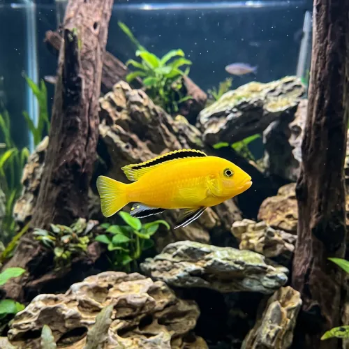

Nome popular principal
Labido Amarelo
Labido Amarelo, Yellow Lab, Ciclídeo Amarelo, Labidochromis Amarelo
Ficha de peixe
Ciclídeos Africanos
O mais dócil e vibrante dos ciclídeos do Lago Malawi, ideal para quem deseja iniciar um aquário de Mbunas.

Nome popular principal
Labido Amarelo, Yellow Lab, Ciclídeo Amarelo, Labidochromis Amarelo
Nome científico
Nome técnico essencial para taxonomia, cruzamento de manejo e referência editorial consistente.
Dificuldade de manejo
Use este nível como referência inicial, sempre considerando volume, estabilidade e compatibilidade do aquário.
Seção 1
Seção 2
Seções 4 a 6
Labido Amarelo tem hábito alimentar onívoro. Excelente. 1 a 2 vezes ao dia. Alimenta-se com entusiasmo de rações específicas para ciclídeos africanos com bom teor vegetal e proteico equilibrado.
Machos dominantes costumam apresentar as nadadeiras pélvicas e anal com contornos pretos bem mais intensos do que as fêmeas. Tipo de reprodução: Ovíparo. Dificuldade de reprodução: Fácil. Espécie incubadora bucal em que a fêmea carrega os ovos e alevinos na boca por cerca de três semanas até a soltura.
Média. Substrato recomendado: Areia de aragonita ou areia fina de quartzo com formações rochosas. Necessidade de esconderijos: Alta. Exige um aquário com bastante amontoado de pedras formando cavernas e frestas escuras para refúgio.
Seção 7
Raramente ultrapassa 10 cm e possui longa expectativa de vida quando mantido em água dura e alcalina.
Seção 8
Ele é considerado o mais pacífico entre os Mbunas do Lago Malawi, mas ainda pode demonstrar territorialismo leve contra espécies similares.
Como vive no Lago Malawi, necessita de água alcalina e dura, com PH ideal entre 7.8 e 8.6.
A fêmea coleta os ovos fertilizados na boca e realiza a incubação bucal por aproximadamente 21 dias protegendo os filhotes.